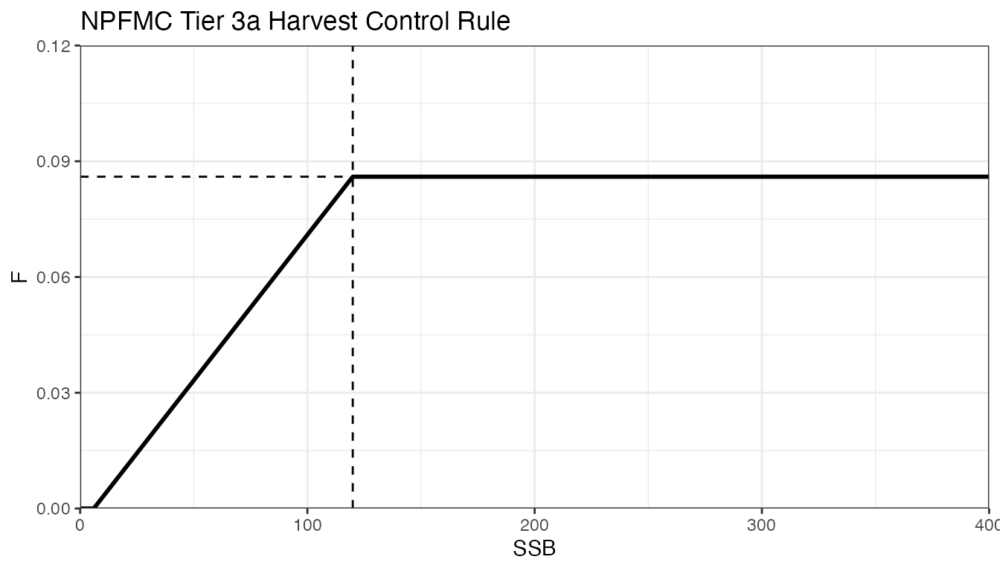

Harvest Control Rules
04_harvest_control_rule_function.RmdUsers must provide as input to the MSE function a list object that defines the harvest control rule (HCR) to apply to the population in each timestep. HCRs can take many forms including constant catch, constant fishing mortality, threshold, etc. Several HCR functions are provided as part of the package, including the current Tier 3a HCR used by the North Pacific Fisheries Management Council for Alaska sablefish, but users can also define their custom HCR functions for their own purposes.
A simple example of an HCR function is as follows:
npfmc_tier3_F <- function(ssb, B_ref, F_ref){
x <- ssb/B_ref
f_min <- 0
f_max = F_ref
lrp = 0.05
urp = 1
if(x >= urp) F <- f_max # if stock status >= 1
if(x > lrp && x < urp) F <- f_max * ((x-lrp)/(urp-lrp)) # if stock status > alpha & stock status < 1
if(x <= lrp) F <- f_min
return(F)
}
tier3 <- function(ref_pts, naa, dem_params){
# Calculate ssb as naa*waa*mat (female only)
ssb <- apply(naa[,,1,]*dem_params$waa[,,1,,drop=FALSE]*dem_params$mat[,,1,,drop=FALSE], 1, sum)
return(
npfmc_tier3_F(ssb, ref_pts$B40, ref_pts$F40)
)
}
The function npfmc_tier3_F defines the NPFMC Tier 3a HCR that is currently used for sablefish management in Alaska. The HCR is a threshold rule that converts annual SSB into an allowable fishing mortality rate (see ____) based on a maximum reference level of F and a biomass reference level. The wrapper function tier3() encapsulates converting from numbers-at-age (naa, the unit of output from the OM) into SSB for the npfmc_tier3_F function.
In order for an HCR function to be compatible with the MSE framework, it must take, at minimum, three parameters: ref_pts, naa, and dem_params. The ref_pts input parameter expects an object generated via the calculate_ref_points() function that the MSE runs internally. The naa input parameter is a four dimensional array (dims [1, nages, nsexes, 1]) of numbers-at-age as output by either the OM or the EM. Finally, the dem_params input parameter is the demographic parameter matrix that is supplied as part of the OM definition.
All three of these parameters are required even for HCRs that may not make direct use of one or more of such parametrs (such as a constant catch rule, which doesn’t require any of them). More complex HCR functions may optionally take additional parameters. Constrution of such HCRs is discussed later.
Once an appropriate HCR function has been defined, a list object that fully defines the HCR must be specified. The HCR list object takes the following form:
hcr_obj <- list(
func = hcr_func, # the HCR function to evaluate
extra_pars = NA, # any additional parameter values that are needed by the HCR function
extra_options = list(
max_stability = NA, # a maximum permissable annual change in TACs (as a proportion)
harvest_cap = NA # a maximum permissable annual TAC
)
)This list object is then supplied as an input to the run_mse(...) function or its associated wrapper functions, like: run_mse(..., hcr=hcr_obj, ...).
Constructing a New HCR Function
Here, we describe how to construct a new step-wise harvest control rule function, where F=0.10 when SSB > 100,000 tons, and where F=0.01 when SSB <= 100,000 tons.
step_hcr <- function(ref_pts, naa, dem_params){
# Calculate ssb as naa*waa*mat (female only) in units of 1,000s tons
ssb <- apply(naa[,,1,]*dem_params$waa[,,1,,drop=FALSE]*dem_params$mat[,,1,,drop=FALSE], 1, sum)
return(ifelse(ssb > 100, 0.10, 0.01))
}
hcr <- list(
func = step_hcr, # the HCR function to evaluate
extra_pars = NA, # no extra parameter needed
extra_options = list(
max_stability = NA, # no stability constraints
harvest_cap = NA # no harvest caps
)
)
mse <- run_mse(om=om, hcr=hcr, nyears_input=100)The HCR function above (step_hcr) takes the three required parameters as inputs, though only makes use of naa and dem_params (if users write a function that does not take all three parameters as inputs, the MSE function will fail when attempting to evaluate the HCR function).
Constructing More Complex HCR Functions
Some HCRs require more information than just the three required parameters to be defined. For example, consider an HCR that wants to dynamically reduce the maximum F applied by a threshold HCR based on the average age of the population in a given year. Such an HCR can be defined like below:
average_age <- function(naa, ages){
return(weighted.mean(ages, naa))
}
avgage_threshold_f <- function(ref_pts, naa, dem_params, ref_naa, ages){
# Calculate ssb as naa*waa*mat (female only) in units of 1,000s tons
ssb <- apply(naa[,,1,]*dem_params$waa[,,1,,drop=FALSE]*dem_params$mat[,,1,,drop=FALSE], 1, sum)
as_stat <- average_age(naa, ages)/average_age(ref_naa, ages)
as_scalar <- threshold_f(as_stat, f_min=0, f_max=1, lrp=0, urp=1)
x <- ssb/ref_pts$B40
f_max <- ref_pts$F40*as_scalar
f_min <- 0
lrp <- 0
urp <- 1
if(x >= urp) F <- f_max # if stock status >= 1
if(x > lrp && x < urp) F <- f_max * ((x-lrp)/(urp-lrp)) # if stock status > alpha & stock status < 1
if(x <= lrp) F <- f_min
return(f)
}The avgeage_threshold_f HCR function accepts two more parameters (ref_naa and ages) than are required by all HCR functions. In order to dynamcically handle an HCR function that takes an indeterminate number of additional parameters, the run_mse() function makes use the special ... argument. This argument allows users to supply as many additional named parameters as needed, and all of such parameters will be passed along to the HCR function when it is called within the HCR loop. So, for this example, the final MSE call would look something like:
ages <- 2:31
ref_naa <- 25*sapply(1:30, \(i) 1*(exp(-0.1))^i)
hcr <- list(
func = avgage_threshold_f, # the HCR function to evaluate
extra_pars = list(
# extra parameter values required by the "avgage_threshold_f function"
ref_naa = ref_naa,
ages = age
),
extra_options = list(
max_stability = NA, # a maximum permissable annual change in TACs (as a proportion)
harvest_cap = NA # a maximum permissable annual TAC
)
)
mse <- run_mse(om=om, hcr=hcr, nyears_input=100)This pattern extends to any HCR function, even ones that require dozens of additional parameters (parameter names still need to be unique, so paramaters cannot have names likes om, hcr, ref_pts, naa, etc. as they are already used by either the calling MSE function or are default parameters alredy supplued to the HCR function.
Additional HCR Complexity
HCRs can also have additional “meta-rules” that further define their behavior. A common example are stability constraints, which limit how much annual catch levels are allowed to change between years. These constraints are defined by the extra_options list object within the larged HCR object definition.
To supply additional management rules, such as stability constraints or harvest caps, a named list extra_options must be added to the larger hcr list. The extra_options list object, can, presently, define three parameters:
hcr$extra_options = list(
max_stability = 0.15, # maximum allowed percent increase in TAC between successive years
harvest_cap = 100000 # maximum allowed TAC
)NOTE: The interface for defining complex HCR functions and for defining additional management meta-rules is subject to change (05/13/2024).